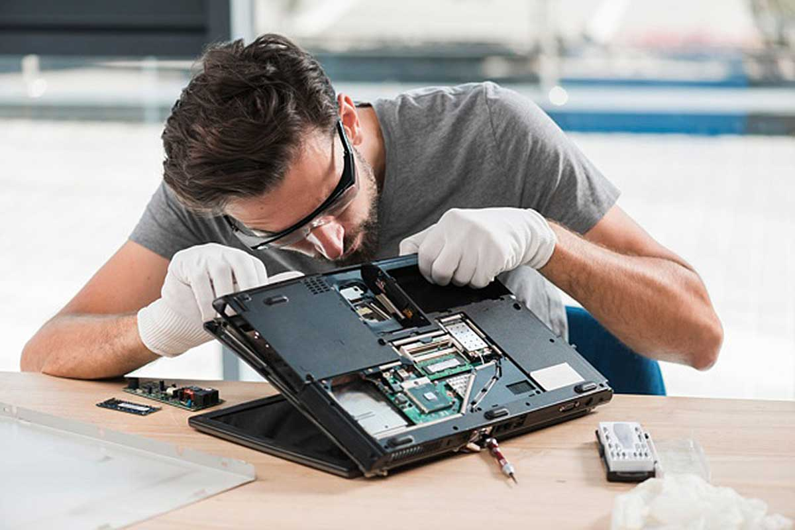

Sobre nosotros...
En TechFix Solutions, entendemos la importancia de tus dispositivos en tu vida diaria. Somos una empresa en crecimiento, apasionada por la tecnología y comprometida con ofrecer soluciones rápidas, eficientes y confiables.
Contamos con un equipo de técnicos altamente capacitados para reparar celulares, computadoras y otros equipos electrónicos, brindando siempre un servicio de calidad y confianza.
Nuestra misión es ofrecer una atención personalizada, garantizar tu satisfacción y ayudarte a reconectar con lo que más importa.
